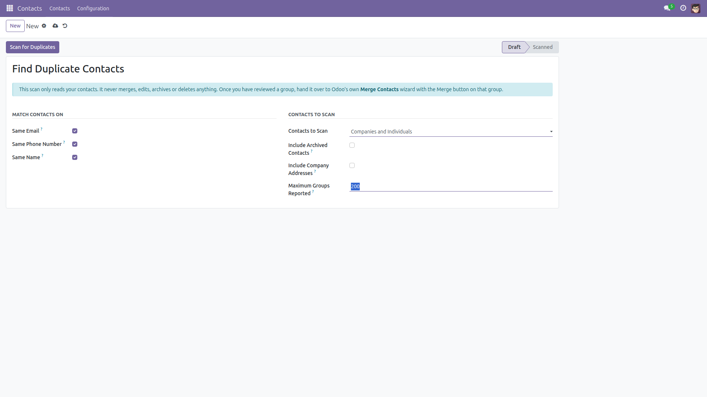
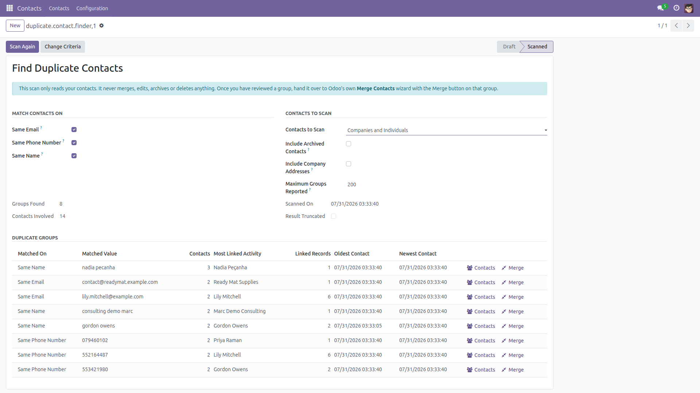
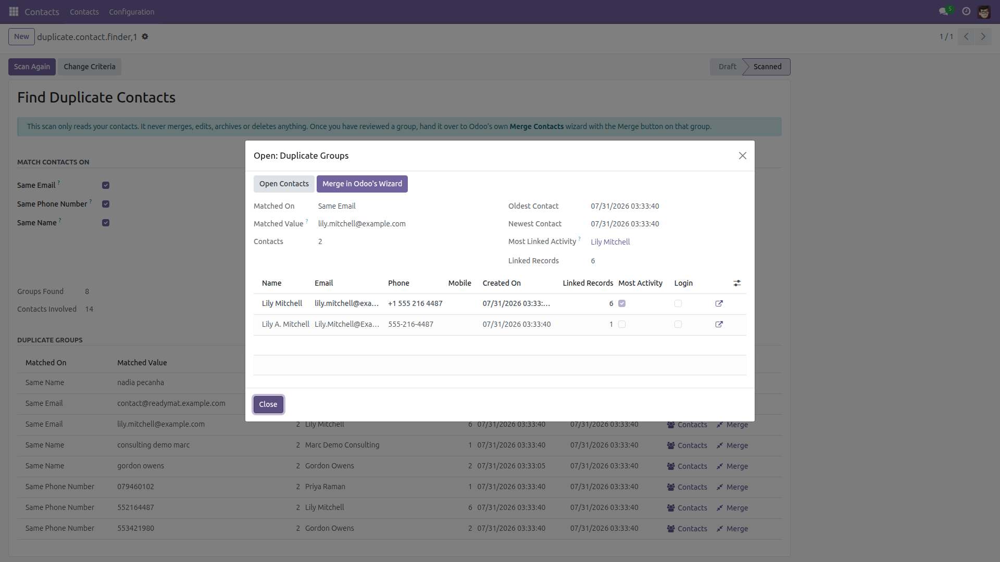
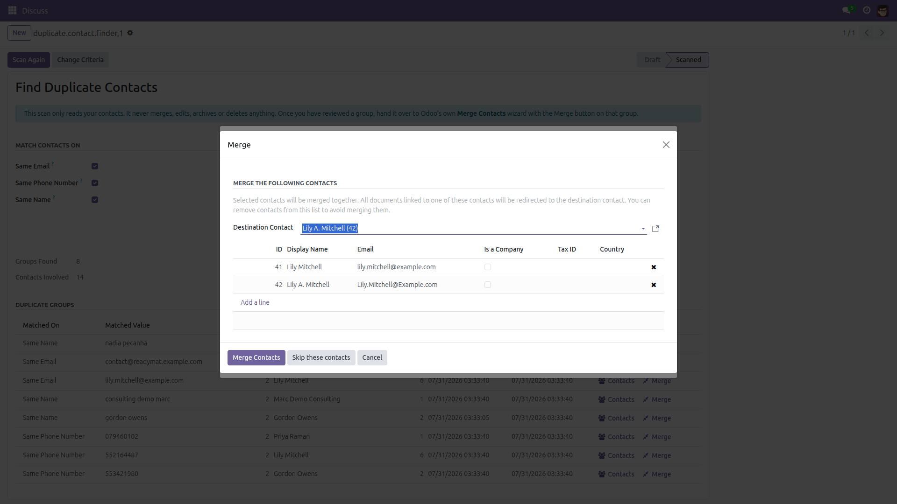
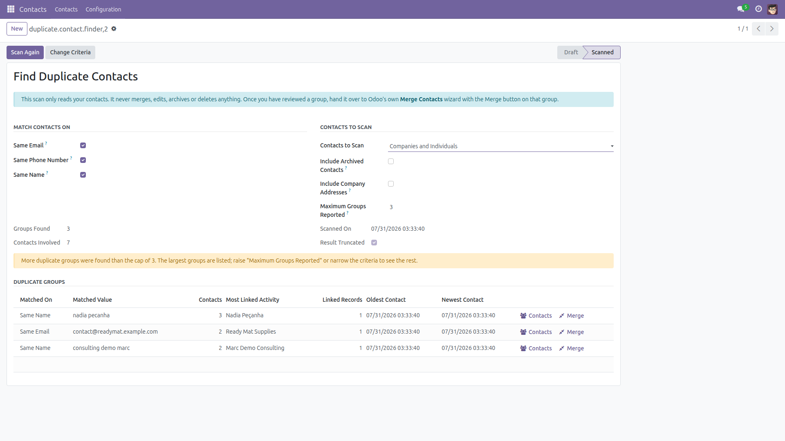

Find Duplicate Contacts
The same customer, entered three times
Every long-lived database ends up with the same customer entered more than once: by the salesperson, by the website, by an import. This module adds an administrator scan that finds those contacts and shows them grouped, with everything you need to decide which one to keep.
Read-only, free and open source (LGPL-3), Odoo 14.0 through 19.0.
This module never merges anything. Merging rewrites foreign keys and deletes records, and Odoo already ships a wizard for it. Nothing here writes to, archives or deletes a contact — every group simply has a Merge button that opens Odoo’s own Merge Contacts wizard with exactly those contacts pre-selected, where you choose the destination contact and confirm.
What it matches on
- Same email — compared trimmed and lower-cased, so
Lily.Mitchell@Example.com and lily.mitchell@example.com are the same address.
- Same phone number — compared on digits only, ignoring spaces, dots, dashes, brackets and country prefixes:
+1 (555) 342-1980 and 5553421980 land in the same group. Phone and mobile are pooled, so one contact’s phone can match another contact’s mobile.
- Same name — ignoring case, accents, punctuation and word order: “Peçanha, Nadia”, “Nadia Peçanha” and “nadia pecanha” are one group.
- Each criterion can be switched off independently, so you can hunt for email duplicates only, or numbers only.
What each group tells you
- How many contacts are in the group and what exactly they have in common.
- Every member with its creation date, email, phone, whether it is archived, and whether it is linked to a login.
- How many records point at each contact — chatter messages, scheduled activities, child contacts, and, when those apps are installed, invoices and bills, sales orders, purchase orders, CRM leads, transfers and tasks. The busiest contact of the group is flagged, so the one to keep is obvious.
- The oldest and the newest contact of the group.
Scan options
- Companies and individuals, companies only, or individuals only.
- Include archived contacts — off by default.
- Include the invoice/delivery addresses attached to a company — off by default, because they legitimately repeat their company’s name and phone.
- A cap on the number of reported groups (200 by default). If more duplicates exist, the biggest groups are shown and the result is clearly flagged as truncated instead of silently hiding them.
Screenshots

Pick the criteria and the contacts to scan, then press Scan for Duplicates.

One line per duplicate group: what matched, how many contacts, which one carries the most linked records, and the oldest and newest of the group.

Inside a group: every member with its creation date, email, phone, login and number of linked records. The busiest one is ticked.

The Merge button hands the group over to Odoo’s standard Merge Contacts wizard, pre-selected. Merging stays entirely in Odoo’s hands.

When more duplicate groups exist than the cap, the result says so instead of quietly dropping them.
Installation
- Copy the module into your addons path, or install it from the Apps list.
- Open Apps, remove the “Apps” filter, search for Find Duplicate Contacts and click Install.
- The standard Contacts application is the only requirement; it is installed automatically if it is missing.
Configuration
- There is nothing to configure: the scan works as soon as the module is installed.
- The menu and the scan are restricted to the Administration / Settings group. No other user can run it or read its results.
- To use the Merge hand-over button, your user also needs Odoo’s standard contact-management right (the one the Merge Contacts wizard itself requires). The scan tells you if it is missing.
Usage
- Go to Contacts → Configuration → Find Duplicate Contacts.
- Tick the criteria you want (email, phone number, name) and choose which contacts to scan.
- Press Scan for Duplicates. The result appears on the same screen, biggest groups first.
- Click a group to see its members, their creation dates and how many records are linked to each one.
- Use Contacts to open the group in the standard contact list, or Merge to hand it over to Odoo’s Merge Contacts wizard.
- Press Change Criteria to adjust the options and scan again.
Good to know (and what it does not do)
- Nothing is ever merged, edited, archived or deleted by this module. It only reads.
- The whole scan is a handful of grouped SQL statements over normalised expressions — the contact table is never read record by record.
- Only contacts of the companies your user is allowed to see are scanned.
- Names shorter than 3 characters and numbers shorter than 7 digits are ignored: they would group half the database.
- Numbers are compared on their last 9 digits. Two numbers from different countries that share those digits will land in the same group — always review a group before merging it.
- The reported-groups cap cannot be raised above 2000, and a scan that cannot finish within 60 seconds stops with a message asking you to narrow it down instead of leaving the browser to time out.
- Results are temporary (they are wizard records). If you leave the page open for an hour, run the scan again before using the Merge button.
- “Most Linked Activity” compares the contacts listed in the group; on a group too large to list in full, only the listed ones are compared.
- On Odoo 14.0–16.0, private addresses (employee home addresses) are included only for users who hold Odoo’s own private-address right — the scan applies the same restriction as the Contacts list.
- In a multi-company hierarchy the scan stays on the companies your user is assigned to. It never reports a contact the Contacts list would hide from you.
- Accents are folded using PostgreSQL’s
unaccent extension when it is installed, and a built-in Latin fold otherwise. Non-Latin scripts are compared as they are (case and punctuation still ignored).
- The same contacts can appear in more than one group — once per criterion that matched. The Matched On column tells you which.
- At most 50 contacts are listed inside one group; the group still reports its real size and the Contacts button opens all of them.
- Contacts are matched on the Email, Phone/Mobile and Name fields only — not on VAT, address or reference.
- Odoo 19.0 merged Mobile into Phone: on 19.0 the single Phone field is used, on 14.0–18.0 both are pooled.
Version notes
Same behaviour on every supported series (14.0 – 19.0), apart from the single Phone field on 19.0 noted above. No external dependency, no third-party library, no configuration.
License: LGPL-3 · Source on GitHub · Issues and contributions welcome.